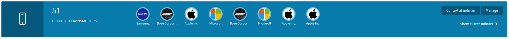
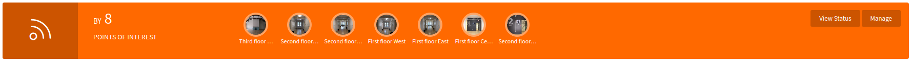

Transmitters Dashboard Tab
Observe all radio-identifiable devices, on the basis of real-time location events
The transmitters perspective is the alternate for the dashboard. The transmitters tab provides a graphical overview of real-time location: what is where?
Detected DevicesThe Detected Devices banner displays all (transmitting) devices currently detected. Each device is represented graphically as a bubble and the total device count is provided. It is possible to toggle between the compact and expanded view by clicking on Show all Devices.
 The Context at directory button is a shortcut to the Contextual API and the Manage button is a shortcut to the People and Things View .
Points of Interest
The Points of Interest banner displays all places having at least one detected device. Each point of interest is represented graphically as a bubble and the total count is provided.
 The View Status button is a shortcut to the Infrastructure Status and the Manage button is a shortcut to the Points of Interest View .
The Detected Transmitters timeseries chart provides a brief historic overview of displacements between points of interest.
The Detected Transmitters distribution chart provides a breakdown of real-time location by directory (place).
Additional Dashboard Documentation
Another tab, another perspective
Visitors Tab: Observe devices likely to carried by people, on the basis of sessions.
Read documentationDashboard Home: Observe the real-time data processed by Pareto.
Read documentation